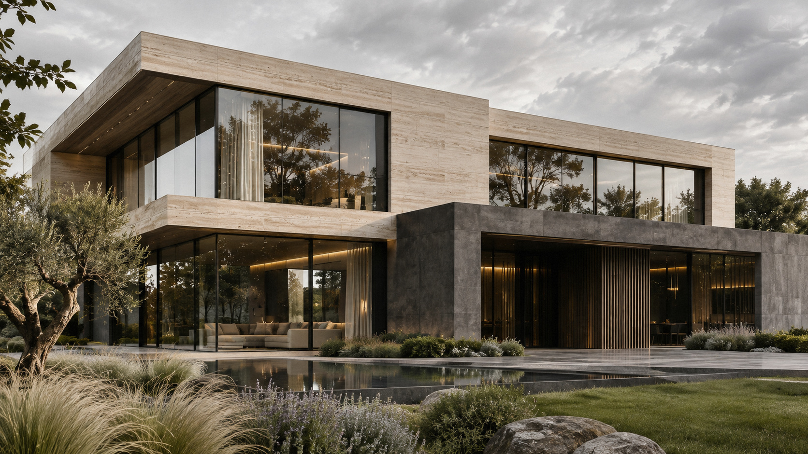
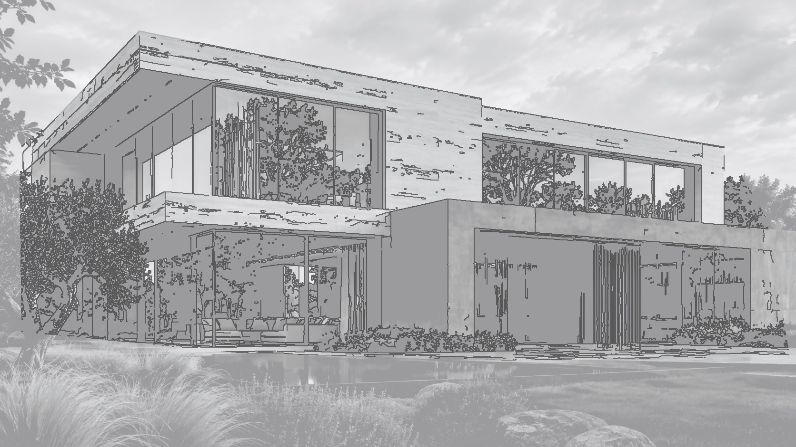

AI-СТУДИЯ ДЛЯ АРХИТЕКТОРОВ
Из проекта. В фотографию.
Скриншот дома → окружение, свет и материалы → архитектурное фото.
01 Проект02 Настройка03 Результат


Результата пока нетНастройте сцену и запустите AI-визуализацию.
Загрузить скриншот проектаPNG, JPG, WEBP · Archicad, SketchUp, Revit и другие
Выбрать Вы видите пример двух состояний одного дома. Для своей модели загрузите скриншот и подключите AI на сервере.